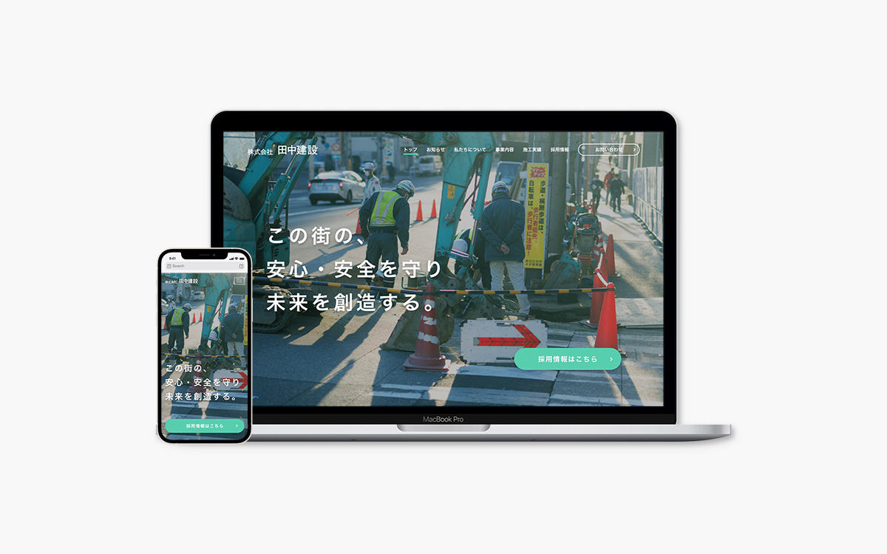
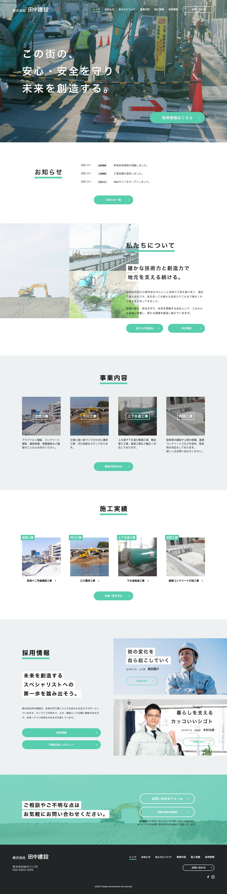
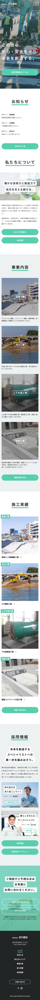

| 作品名 | 株式会社田中建設コーポレートサイト（架空） |
|---|---|
| 制作期間 | 16時間 |
| 担当作業 | デザイン |
| 制作の目的 | 新規顧客の獲得や新規採用者を増やすために制作する |
| コンセプト | 建設業界のネガティブイメージである3K（汚い、きつい、危険）を払拭し、生き生きとした、信頼と実績のある地元密着型の企業であることをアピールできるサイトを作成する |
| ターゲット | 官公庁職員や、下請けを探す同業者、改装工事を依頼しようとする一般人など |
| 作品説明 | 3Kを感じさせないよう、建設業界のかっこよさや信頼感の厚さ、将来性が高いことを意識して作成しました。 将来性、信頼感、安心感、新規採用というキーワードから色は明るめで青みがかった黄緑を使用し、明るく良い印象を与えられるようにしました。 サイトの色に合わせて、写真からも印象よく感じ取ってもらえるよう、少し緑みを足すように補正を加えました。 ファーストビューはキャッチコピーを白色にし、背景画像に溶け込まぬよう、背景画像を黒っぽく調整しました。また、新規採用を行っていることがわかるよう、ファーストビュー内にリンクボタンを配置しました。 全体とのバランスを見ながら、要素同士の位置をずらして動きを出したり、背景色を使って各セクションごとの認識わかりやすくしました。 新規採用のセクションでは、メッセージ性を加えながら先輩社員を身近に感じてもらえるインタビューのリンクを配置しました。 |
| 使用ツール | Photoshop,XD |
| 作品データ | 作品リンク |
トップページ（PC）
トップページ（SP）
